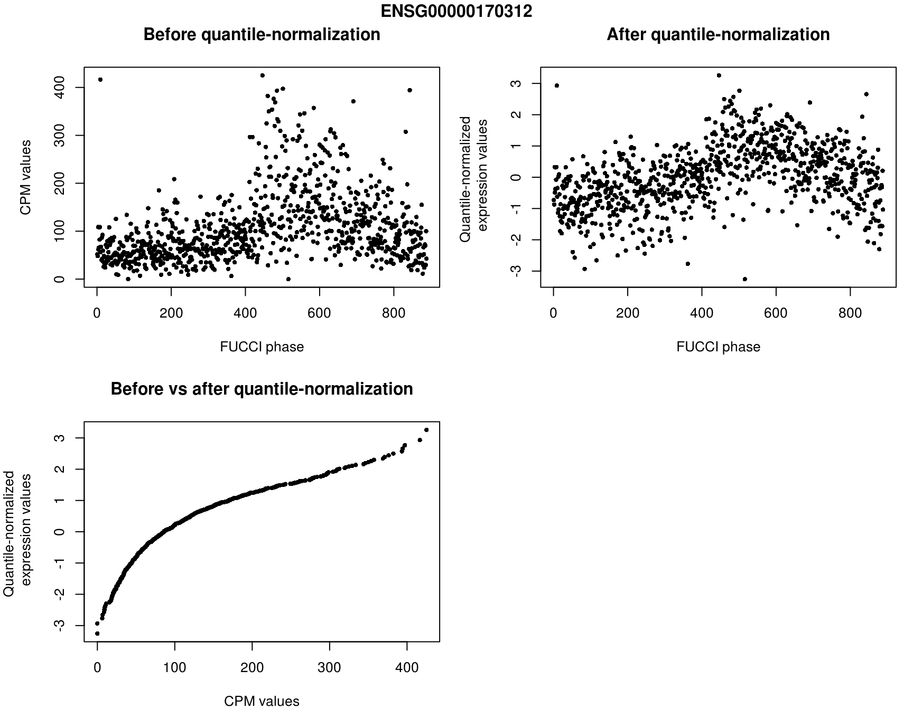
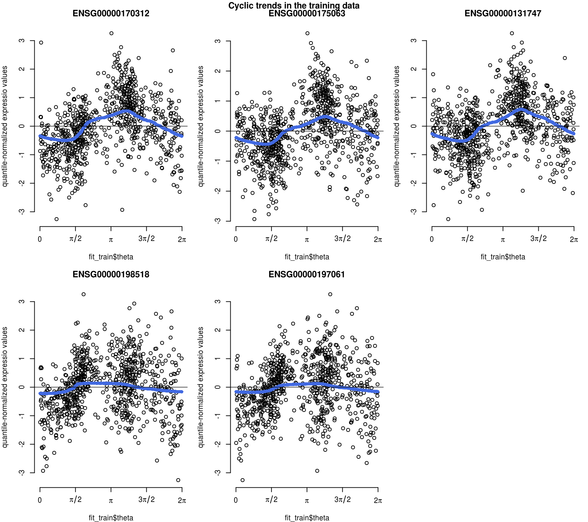

An example of predicting cell cycle phase using peco
Joyce Hsiao
2019-09-13
Source:vignettes/vignette.Rmd
vignette.Rmdpeco is a supervised approach for PrEdicting cell cycle phase in a COntinuum using single-cell RNA sequencing data. This vignette provides a simple example of predicting cell cycle phase using 5 cyclic genes. We identifeid the 5 genes as the top 5 cyclic genes in our study, which also showed thata simple predictor of top 5 cyclic genes performed as well as when including more genes with weaker cyclic trends.
These five genes are: CDK1, UBE2C, TOP2A, HISTH1E, and HISTH1C, all of which were identified as cell cycle marker genes in previous studies of the cell cycle using yeast (Spellman et al., 1998) and HeLa cells (Whitfield et al., 2002).
Preparation
2. Data preprocessing
Note that we mapped our data to GRCh37 Ensembl Assembly.
# phenotype information
pdata <- pData(eset)
# gene information
fdata <- fData(eset)
# select top 5 cyclic genes
# normalize molecule count for differencese in library sizes
# reordering the data according to FUCCI phase
# quantile-transform each gene to normal distribution
yy <- counts_normed[g,]
yy.qq <- qq.map$x
return(yy.qq)
}) )
We quantile-normalize CPM values for each gene to a normal distribution. The samples with zero molecule count are each assigned a different quantile value. By doing this, the transformed gene expression values centered at 0 with standard deviation of 1.
main="Before quantile-normalization",
xlab="FUCCI phase", ylab="CPM values")
main="After quantile-normalization",
xlab="FUCCI phase", ylab="Quantile-normalized \n expression values")
main="Before vs after quantile-normalization",
xlab="CPM values",
ylab="Quantile-normalized \n expression values")

Analysis
2. Training
Estimating cyclic functions of the desired genes using the traing data. In this example, we include single-cell samples from 5 individuals.
# Select samples from NA18511 for our prediction example
# learning cyclic functions of the genes using our training data
theta = theta_train,
polyorder=2,
ncores=1,
method.trend="trendfilter")Fitted cyclic trend in the training data.
for (g in 1:5) {
plot(fit_train$Y[g,],
x=fit_train$theta, axes=FALSE,
ylab="quantile-normalized expressio values")
x=fit_train$theta,
pch=16, col="royalblue")
}

3. Predicting
Predicting cell cycle phase for single-cell samples from one individual.
# predicting cell cycle phase for single-cell samples from one individual
# that is not included in the training
##------ Predict cell cycle phase
sigma_est=fit_train$sigma_est,
funs_est=fit_train$funs_est,
method.trend="trendfilter",
ncores=1,
get_trend_estimates=TRUE)Results of prediction in the testing sample.
for (g in 1:5) {
plot(fit_predict$Y_reordered[g,],
x=fit_predict$cell_times_reordered, axes=FALSE,
xlab="FUCCI phase",
ylab="Predicted phase")
x=fit_predict$cell_times_reordered,
pch=16, col="royalblue")
}

Session information
#> R version 3.5.1 (2018-07-02)
#> Platform: x86_64-pc-linux-gnu (64-bit)
#> Running under: Scientific Linux 7.4 (Nitrogen)
#>
#> Matrix products: default
#> BLAS/LAPACK: /software/openblas-0.2.19-el7-x86_64/lib/libopenblas_haswellp-r0.2.19.so
#>
#> locale:
#> [1] LC_CTYPE=en_US.UTF-8 LC_NUMERIC=C
#> [3] LC_TIME=en_US.UTF-8 LC_COLLATE=en_US.UTF-8
#> [5] LC_MONETARY=en_US.UTF-8 LC_MESSAGES=en_US.UTF-8
#> [7] LC_PAPER=en_US.UTF-8 LC_NAME=C
#> [9] LC_ADDRESS=C LC_TELEPHONE=C
#> [11] LC_MEASUREMENT=en_US.UTF-8 LC_IDENTIFICATION=C
#>
#> attached base packages:
#> [1] parallel stats graphics grDevices utils datasets methods
#> [8] base
#>
#> other attached packages:
#> [1] peco_0.99.0 Biobase_2.42.0 BiocGenerics_0.28.0
#>
#> loaded via a namespace (and not attached):
#> [1] Rcpp_1.0.2 pracma_2.2.5 compiler_3.5.1
#> [4] circular_0.4-93 iterators_1.0.10 tools_3.5.1
#> [7] boot_1.3-20 digest_0.6.20 evaluate_0.12
#> [10] memoise_1.1.0 lattice_0.20-38 pkgconfig_2.0.2
#> [13] rlang_0.4.0 Matrix_1.2-17 foreach_1.4.4
#> [16] igraph_1.2.2 yaml_2.2.0 mvtnorm_1.0-11
#> [19] geigen_2.3 pkgdown_1.4.0 stringr_1.3.1
#> [22] knitr_1.20 desc_1.2.0 fs_1.3.1
#> [25] rprojroot_1.3-2 grid_3.5.1 conicfit_1.0.4
#> [28] R6_2.4.0 rmarkdown_1.10 genlasso_1.4
#> [31] magrittr_1.5 backports_1.1.2 codetools_0.2-15
#> [34] htmltools_0.3.6 MASS_7.3-51.1 assertthat_0.2.1
#> [37] stringi_1.2.4 doParallel_1.0.14 crayon_1.3.4